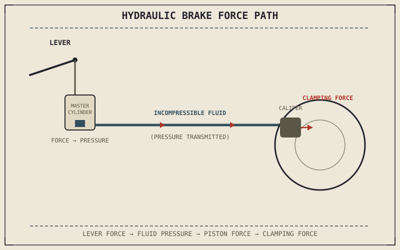

Squeeze a brake lever with two fingers and, a fraction of a second later, hundreds of newtons of clamping force appear at a caliper mounted a meter away, with no chain, cable, or rod visibly connecting the two. The system doing that work is hydraulic, and understanding its three main components — master cylinder, disc, and caliper — explains both why braking feels the way it does and why a single air bubble in the wrong place can undermine the whole thing.
Chapter 7.2 explained the force and torque a brake system needs to generate. This chapter covers the physical hardware that actually generates it.
The Master Cylinder: Where Lever Force Becomes Pressure
The master cylinder converts the rider's mechanical input at the lever or pedal into hydraulic pressure, using a piston that moves through a small-diameter bore as the lever is pulled, pressurizing the brake fluid sealed inside the system. That fluid is deliberately incompressible — a critical property, since any compressibility in the fluid would absorb lever motion instead of transmitting it as pressure, producing the soft, spongy lever feel that signals air has entered the system. Air is compressible where hydraulic fluid isn't, which is exactly why even a small air bubble trapped in the lines noticeably degrades brake feel and effectiveness, and why bleeding a brake system to remove that air is genuine, safety-relevant maintenance rather than a cosmetic fix.
The Disc and Caliper: Where Pressure Becomes Clamping Force
That pressurized fluid travels through brake lines to the caliper, where it acts on one or more pistons, pushing the brake pads against the spinning disc with the clamping force Chapter 7.2 already covered. Because hydraulic pressure acts equally on every surface it touches, the caliper piston's diameter, relative to the master cylinder piston's diameter, determines how much the rider's original lever force is amplified — a larger caliper piston area relative to the master cylinder produces more clamping force from the same lever pull, at the cost of the lever needing to travel farther to move the same volume of fluid. This is a genuine mechanical trade-off, not a free amplification, and it's why brake system components are engineered together rather than mixed arbitrarily.
A brake lever doesn't pull a cable to the caliper — it pressurizes an incompressible fluid, and that pressure, acting on a piston of a specific size at the other end, is what actually produces clamping force. Air in that fluid is the one thing that breaks the whole chain.

A hydraulic brake system diagram showing the master cylinder converting lever force into fluid pressure, that pressure traveling through a brake line, and a caliper piston converting the pressure back into clamping force against the disc.
Why Modern Systems Use Multiple Pistons
Many calipers use two, four, or even six pistons rather than one, spreading the clamping force across a wider pad area. This improves pad wear evenness and heat distribution across the pad surface, which matters directly for the heat management Chapter 7.1 and Chapter 7.2 both flagged as a real engineering concern under sustained hard braking. Multiple smaller pistons can also be sized differently across the caliper — a technique called differential-bore calipers — to help keep pad pressure more even as the pad itself wears and its leading and trailing edges experience slightly different loads.
A Common Misconception, Cleared Up Early
It's easy to assume brake fluid works something like engine oil — a lubricant that occasionally needs topping up. Brake fluid's actual job is transmitting pressure without compressing or boiling, and it's also hygroscopic, meaning it absorbs moisture from the air over time. Absorbed water lowers the fluid's boiling point, and under sustained hard braking — heat generated exactly as Chapter 7.1 described — that lower boiling point can let the fluid actually boil inside the system, producing compressible vapor bubbles with the same spongy, weakened result as trapped air. This is why brake fluid has a service replacement interval regardless of how the brakes feel day to day, not just a top-up requirement.
Where This Leads
The hardware converts lever input into clamping force reliably, but that force still has to be distributed correctly between the front and rear wheel, and applied against a motorcycle whose weight is actively shifting as it slows. Chapter 7.4 turns to the hydraulics of that force transmission in more depth, setting up the weight transfer and brake balance chapters that follow.
Key Concepts to Remember
- The master cylinder converts lever force into hydraulic pressure using incompressible brake fluid, which is why any trapped air produces a soft, weakened lever feel.
- The relative piston sizes of the master cylinder and caliper determine how much the original lever force is amplified into clamping force, trading force for lever travel.
- Multiple caliper pistons spread clamping force for better pad wear and heat distribution under sustained hard braking.
- Brake fluid absorbs moisture over time, lowering its boiling point and risking vapor bubbles under sustained hard use — the reason for its scheduled replacement interval.
Cross-References
| ← Ch. 7.2 | Explained the force and torque a brake system needs to produce; this chapter covers the physical hardware that actually produces it. |
| ← Ch. 7.1 | Flagged heat management as a genuine engineering concern under sustained braking; this chapter shows multi-piston caliper design directly addressing it. |
| → Ch. 7.4 | Covers brake hydraulics and force transmission in more depth, setting up weight transfer and brake balance. |